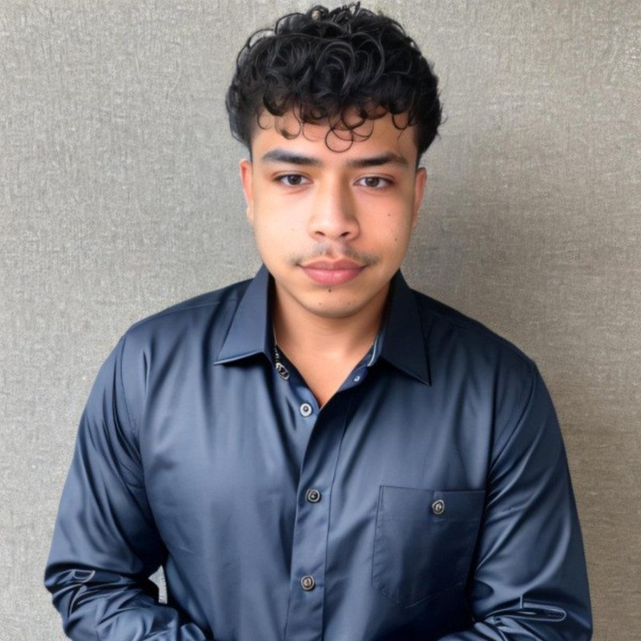

Victor Acuna

Summary
I’m a UCLA Computer Science and Engineering student focused on full-stack
development, passionate about building responsive and user-centered web
applications. With experience in React, Node.js, and UI/UX design, I enjoy
turning ideas into functional, visually engaging digital experiences.
Education
University of California, Los Angeles
Computer Science and Engineering B.S.
Class of 2026
GPA: 3.070
Coursework:
- Software Construction
- Introduction to Computer Organization
- Object Oriented Programming in C++
- Introduction to C++
- Calculus of Several Variables
- Integration and Infinite Series
- Differential and Integral Calculus
- Combat Robotics
- Game Development
Certifications:
- HTML, CSS, and Java (2025)
- Intro to CSS3 (2025)
- Coding the Static Restaurant Site (2025)
- Crash Course on Python (2025)
Skills
Programming and Development
- C++
- Python
- Swift (iOS Development)
- HTML
- CSS
- JavaScript
- Node.js
Game and Web Development
- Unity
- Roblox Studio
- WordPress
- Figma
- React
Hardware and Engineering Tools
- Arduino
- SolidWorks
- Autodesk Inventor
- OnShape
- Autodesk Fusion 360
- RAPTOR
Version Control and Collaboration
Highlighted Projects and Work Experience
Webmaster
Made at UCLA
Work Experience
August 2024 - Present
-
Manage the website with WordPress and HTML, ensuring updates,
enhancements, and optimal performance. Use HTML for custom elements and
design.
-
Collaborate with the team to showcase MADE's dynamic projects, promoting
creativity and technology.
-
Ensure the website reflects the organization's mission, blending
functionality with engaging design for a seamless user experience.
FullStack Developer
FitChck
(Software Construction, UCLA) - Class Project
January 2025 - March 2025
-
Built a responsive fashion web app that recommends outfits based on
current weather and user preferences.
-
Used React for dynamic front-end components and Node.js for backend
logic and API calls.
-
Integrated a weather API and implemented user login functionality for a
personalized experience.
-
Designed an intuitive UI/UX in Figma and deployed the app for public
access.
Game Developer
Gail Lewis: Retail Avenger
(Game Development, UCLA) - Class Project
January 2024 - March 2024
-
Developed and designed a top-down two-dimensional Unity game where Gail
Lewis, a retired Walmart associate, must stop delinquents from stealing,
helping to restore peace in Walmart.
- Led character and level design, creating immersive environments.
-
Programmed controls for movement and shooting using C# to enhance
gameplay.
-
Collaborated via GitHub for version control and file sharing, and
published the game on itch.io for free.
Founder and Developer
ShopBuddy
Personal Project
August 2021 - November 2025
-
Founded ShopBuddy to develop a contactless shopping cart solution using
Arduino (based on C++) for programming, designed to combat the spread of
diseases.
-
Includes GPS sensors for autonomous cart navigation and obstacle
avoidance sensors for enhanced safety.
Founder and Instructor
United We Code
Nonprofit Project
August 2018 - Present
-
Established a non-profit that empowers low-income elementary school
students to learn Scratch programming.
-
Coordinate teaching efforts in both English and Spanish to accommodate
diverse learners.
UI/UX Intern
DevX (UCLA)
Internship
January 2023 - May 2023
-
Collaborated in Figma to design innovative websites and mobile apps
addressing challenges within the UCLA community.
-
Developed a user-friendly coffee shop app with customizable orders,
utilizing various interactive buttons.
-
Included functionality that allows users to schedule pick-up times and
pay through the app.
Leadership and Professional Development Experience
Outreach Coordinator, Society of Latino Engineers and Scientists (SOLES) -
UCLA
September 2022 - Present
-
Engaged actively with SOLES, empowering Latinx students in engineering
and science.
-
Contributed to hydrogen-powered RC car development, employing CAD,
research, and fabrication techniques.
Scholar, Center for Excellence in Engineering Diversity (CEED) - UCLA
September 2022 - Present
-
Selected as one of 100 students for a 4-year college access and success
program for underrepresented students.
-
Engaged in career fairs, resume critiques, tutoring, and professional
development resources.
Scholar, Thrive Scholars
April 2020 - Present
-
Selected as one of 240 students for a 6-year college access, college
success, and professional development program.
-
Part of a comprehensive Career Development Program with career coaching
and skill-building projects.
Other